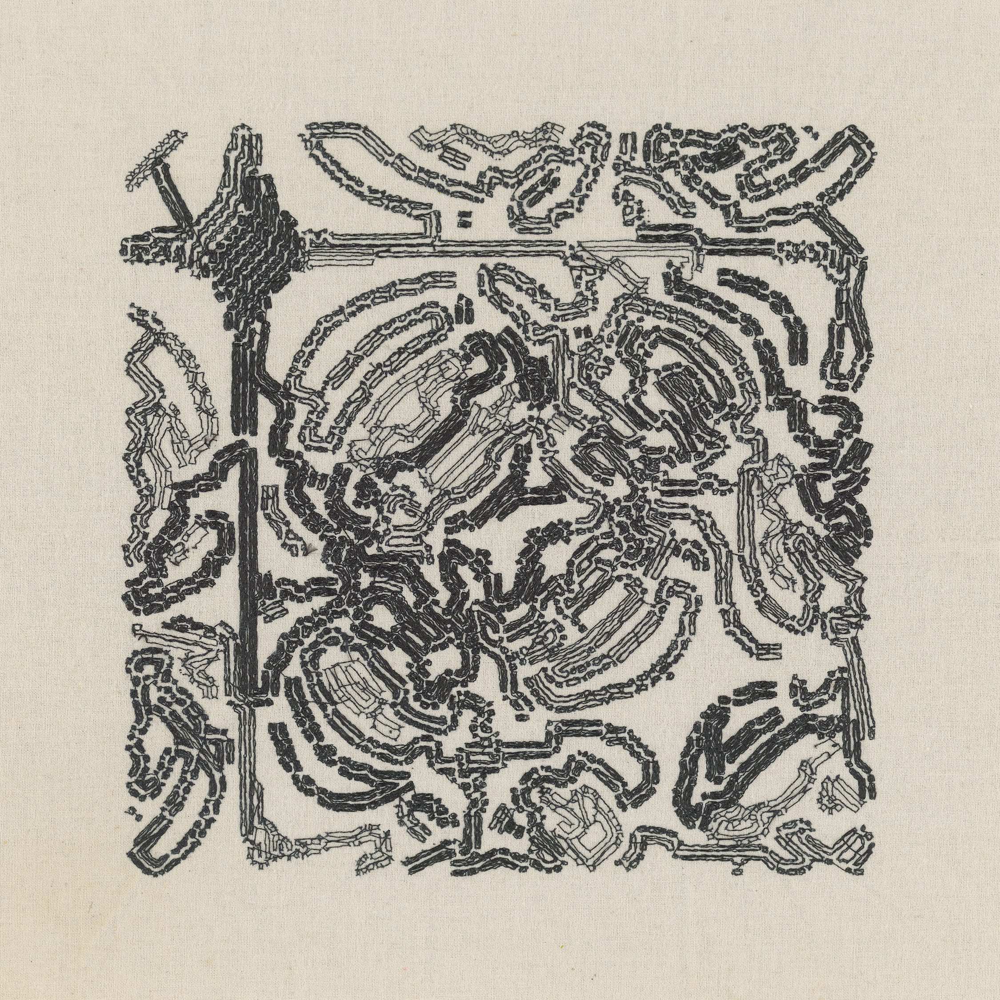
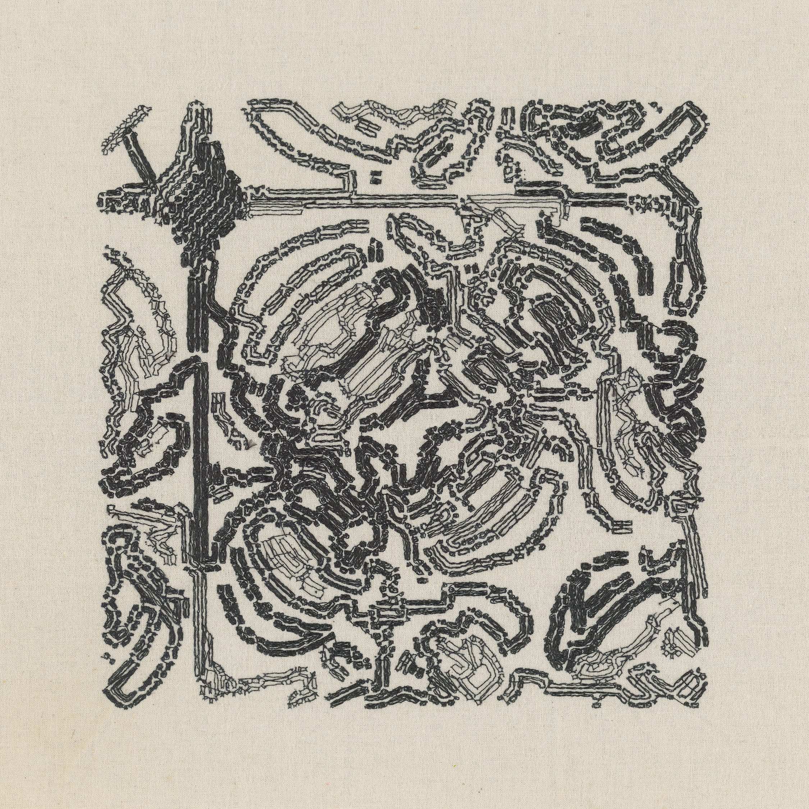

Anna Lucia
oefenstof (2024-ongoing)
(at least) 50 NFTs + machine embroidery on fabric
objkt contract
Publications: "Code and Craft at Its Best", Objkt blog, July 2024
Oefenstof* is a continuous project in which I create embroidered works of fabric based on an artistic algorithm of my own design. This project is currently in development.
This project is a further exploration of embroidery samplers. Originating as early as the 2nd century BC and found across diverse cultures, embroiderers and lacemakers used samplers as a practical record of motifs and stitches – for creative expression and for educational purposes. Samplers often featured scattered motifs, bands of decorative borders, animals, floral motifs, and alphabets. The project builds upon both the patterns and representations found in embroidery samplers and the act of recording embroidery work as a form of creative expression.
Oefenstof considers the relationship between automatization and alienation through code and craft. Throughout the project, I will use an embroidery machine and custom code to build her own library of embroidery samples, reinterpreting traditional embroidery patterns and motifs with computer algorithms thus complementing automated and manual processes in the creation process.
The project will feature 50 limited edition releases over approximately 4 months, with new pieces available every Monday, Wednesday, and Friday. Each NFT will include 15 editions and will consist of a high-resolution scan of the embroidery work and a digital component. Sales price will be ~15$ per edition.
I retain full ownership of this series' physical works, including the right to sell them individually or incorporate them into new artworks. If you are interested in obtaining one of the physicals reach out to me via email or social media.
*oefenstof translates from Dutch to “practice fabric” or “practice material” and is borrowed from the book Oefenstof by Joke Visser, a history of embroidery samplers from The Netherlands.


 
